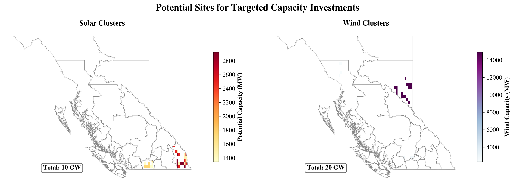

Resources Plots#
[1]:
import warnings
from pathlib import Path
import ipywidgets as widgets
import matplotlib.pyplot as plt
import pandas as pd
from IPython.display import display
import RES.RESources as RES_module
from RES import utility as utils
from RES.hdf5_handler import DataHandler
import RES.visual_styles as styles
style_path = Path(styles.__file__).parent / "elsevier.mplstyle"
plt.style.use(style_path)
# Suppress specific warnings
warnings.filterwarnings("ignore", category=UserWarning)
cfg=utils.load_config('config/config_CAN.yaml')
└> CODERS API key loaded from: data/downloaded_data/CODERS/coders_api.yaml
└> user Elias: w0OksqQKMFMtKPbO
Select Region#
[2]:
# Construct region_options as a list of tuples: (name, code)
region_options = [(cfg['region_mapping'][code]['name'], code) for code in cfg['region_mapping']]
region_code = 'BC' # Default selection, change as needed
# Create dropdown widget for region codes with names shown, codes as values
region_code_dropdown = widgets.Dropdown(
options=region_options,
value=region_code,
description='Region:',
disabled=False,
)
display(region_code_dropdown)
Select Resource type#
[3]:
resource_type_dropdown = widgets.Dropdown(
options=['wind', 'solar'],
value='wind',
description='Resource:',)
display(resource_type_dropdown)
[4]:
resource_type = resource_type_dropdown.value
province_code = region_code_dropdown.value
required_args = {
"config_file_path": 'config/config_CAN.yaml',
"region_short_code": province_code,
"resource_type": resource_type
}
# Create an instance of Resources and execute the module
RES_module = RES_module.RESources_builder(**required_args)
____________________________________________________________
Initiating RESource Builder | RES.RESources
____________________________________________________________
└─> RES.boundaries| Region Set to >> Short Code : BC, Name: British Columbia).
└─> RES.boundaries| Collecting regional boundary...
└─> RES.boundaries| Loading GADM boundaries (Sub-provincial | level =2) for British Columbia from local file data/processed_data/regions/gadm41_Canada_L2_BC.geojson.
└─> RES.boundaries| Region Set to >> Short Code : BC, Name: British Columbia).
└─> RES.boundaries| Collecting regional boundary...
└─> RES.boundaries| Loading GADM boundaries (Sub-provincial | level =2) for British Columbia from local file data/processed_data/regions/gadm41_Canada_L2_BC.geojson.
└> NREL_ATBProcessor initiated...
└> RES.atb| Processing Annual Technology Baseline (ATB) data sourced from NREL...
└> RES.utility| Directory 'data/downloaded_data/NREL/ATB/ATBe.parquet' found locally.
└> RES.atb| ATB cost datafile: ATBe.parquet loaded
└> Extracting technology baseline costs...
└─> Extracting Solar PV technology cost...
└> RES.hdf5_handler|💾 Data (GeoDataFrame/DataFrame) saved to data/store/resources_BC_strict_policy_aeroway_CPCAD_buffer.h5 with key 'cost/atb/solar'
└─> Extracting Wind Turbine technology cost...
└> RES.hdf5_handler|💾 Data (GeoDataFrame/DataFrame) saved to data/store/resources_BC_strict_policy_aeroway_CPCAD_buffer.h5 with key 'cost/atb/wind'
└> Snapshot for Resources: 2023-01-01 07:00:00 to 2024-01-01 06:00:00
└> RES.RESources| Saving configuration to results directory...
ℹ️ RES.utility| A copy of the dictionary saved to : 'results/RESources/BC/config_BC_strict_policy_aeroway_CPCAD_buffer.yaml'
[Exploratory]#
[5]:
# Define the directory and search pattern
data_store_dir = Path("data/store/")
search_keyword = f"resources_{region_code}_"
# List files containing the search pattern
matching_files = [str(f) for f in data_store_dir.glob(f"*{search_keyword}*") if f.is_file()]
# Extract run IDs from matching_files
run_ids = [f.replace(str(data_store_dir) + '/', '').replace(search_keyword, '').replace(".h5", '') for f in matching_files]
RUN_ID="default"
# Create dropdown widget
run_id_dropdown = widgets.Dropdown(
options=run_ids,
value=RUN_ID,
description='Run ID:',
disabled=False,
)
display(run_id_dropdown)
[6]:
RUN_ID= run_id_dropdown.value
store=f"data/store/resources_{region_code}_{RUN_ID}.h5"# f"../data/store/resources_{province_code}.h5"
res_store=DataHandler(store,show_structure=True) # the DataHandler object could be initiated without the store definition as well.
____________________________________________________________
RES.hdf5_handler|🗄️ Structure of HDF5 file: data/store/resources_BC_default.h5
____________________________________________________________
[key] boundary
[key] cells
[key] clusters
└─ [key] clusters/solar
└─ [key] clusters/wind
[key] cost
└─ [key] cost/atb
└─ └─ [key] cost/atb/solar
└─ └─ [key] cost/atb/wind
[key] dissolved_indices
└─ [key] dissolved_indices/solar
└─ [key] dissolved_indices/wind
[key] lines
[key] substations
[key] timeseries
└─ [key] timeseries/clusters
└─ └─ [key] timeseries/clusters/solar
└─ └─ [key] timeseries/clusters/wind
└─ [key] timeseries/solar
└─ [key] timeseries/wind
[key] units
└> To access the data :
└> <datahandler instance>.from_store('<key>')
[7]:
cells=res_store.from_store('cells')
boundary=res_store.from_store('boundary')
solar_clusters=res_store.from_store('clusters/solar')
wind_clusters=res_store.from_store('clusters/wind')
solar_clusters_ts=res_store.from_store('timeseries/clusters/solar')
wind_clusters_ts=res_store.from_store('timeseries/clusters/wind')
dissolved_indices_solar=res_store.from_store('dissolved_indices/solar')
dissolved_indices_wind=res_store.from_store('dissolved_indices/wind')
Interactive Map
[8]:
# wind_clusters[wind_clusters['lcoe']<=100].explore('potential_capacity')
Playground for Top Site Selection#
[9]:
resource_clusters_solar,cluster_timeseries_solar=RES_module.select_top_sites(solar_clusters,
solar_clusters_ts,
resource_max_capacity=10)
resource_clusters_wind,cluster_timeseries_wind=RES_module.select_top_sites(wind_clusters,
wind_clusters_ts,
resource_max_capacity=20)
>>> Selecting TOP Sites to for 10 GW Capacity Investment in BC...
____________________________________________________________________________________________________
Selecting the Top Ranked Sites to invest in 10 GW PV in BC
____________________________________________________________________________________________________
!! Note: The Last cluster (Okanagan-Similkameen_2) originally had 2.08 GW potential capacity.To fit the maximum capacity investment of 10 GW, it has been adjusted to 1.76 GW
>>> Selecting TOP Sites to for 20 GW Capacity Investment in BC...
____________________________________________________________________________________________________
Selecting the Top Ranked Sites to invest in 20 GW PV in BC
____________________________________________________________________________________________________
!! Note: The Last cluster (Thompson-Nicola_1) originally had 4.17 GW potential capacity.To fit the maximum capacity investment of 20 GW, it has been adjusted to 2.77 GW
[10]:
RES_module.export_results('wind',
region_code,
resource_clusters_wind,
cluster_timeseries_wind,)
└> wind clusters exported to :results/resource_options_wind_BC_timeseries.csv
[11]:
RES_module.export_results('solar',
region_code,
resource_clusters_solar,
cluster_timeseries_solar,)
└> solar clusters exported to :results/resource_options_solar_BC_timeseries.csv
Visualize Results#
[12]:
import matplotlib.pyplot as plt
import pandas as pd
legend_x_ax_offset = 1
# Ensure 'Region' in boundary
if 'Region' not in boundary.columns:
boundary = boundary.reset_index(inplace=True)
# Assign region numbers
boundary['Region_Number'] = range(1, len(boundary) + 1)
# Compute totals
solar_total_GW = resource_clusters_solar['potential_capacity'].sum()/1E3
wind_total_GW = resource_clusters_wind['potential_capacity'].sum()/1E3
# Create figure and axes
fig, (ax1, ax2) = plt.subplots(figsize=(14, 5), ncols=2, dpi=300)
fig.suptitle("Potential Sites for Targeted Capacity Investments",
fontsize=18, weight='bold')
ax1.set_axis_off()
ax2.set_axis_off()
shadow_offset = 0.02
# --- Solar Map ---
boundary.geometry = boundary.geometry.translate(xoff=shadow_offset, yoff=-shadow_offset)
boundary.plot(ax=ax1, color='none', edgecolor='lightgrey', linewidth=1, alpha=0.6)
boundary.geometry = boundary.geometry.translate(xoff=-shadow_offset, yoff=shadow_offset)
im1 = resource_clusters_solar.plot(
column='potential_capacity',
ax=ax1,
cmap='YlOrRd',
legend=True,
legend_kwds={'label': "Solar Capacity (MW)", 'shrink': 0.7, 'orientation': 'vertical'}
)
# Get the colorbar and set font size
cbar1 = ax1.get_figure().get_axes()[-1] # Get the colorbar axes
cbar1.tick_params(labelsize=12)
cbar1.set_ylabel("Potential Capacity (MW)", fontsize=12, weight='bold')
boundary.plot(ax=ax1, facecolor='none', edgecolor='grey', linewidth=0.4, alpha=0.9)
ax1.set_title("Solar Clusters", fontsize=14, weight="bold")
# Annotation for total solar capacity
ax1.annotate(
f"Total: {solar_total_GW:,.0f} GW",
xy=(0.2, 0.1), xycoords="axes fraction",
fontsize=12, weight="bold", color="black",
bbox=dict(facecolor="white", edgecolor="black", alpha=0.6, boxstyle="round,pad=0.3")
)
# --- Wind Map ---
boundary.geometry = boundary.geometry.translate(xoff=shadow_offset, yoff=-shadow_offset)
boundary.plot(ax=ax2, color='none', edgecolor='lightgrey', linewidth=1, alpha=0.6)
boundary.geometry = boundary.geometry.translate(xoff=-shadow_offset, yoff=shadow_offset)
im2 = resource_clusters_wind.plot(
column='potential_capacity',
ax=ax2,
cmap='BuPu',
legend=True,
legend_kwds={'label': "Potential Capacity (MW)", 'shrink': 0.7, 'orientation': 'vertical'}
)
# Get the colorbar and set font size
cbar2 = ax2.get_figure().get_axes()[-1] # Get the colorbar axes
cbar2.tick_params(labelsize=12)
cbar2.set_ylabel("Wind Capacity (MW)", fontsize=12, weight='bold')
boundary.plot(ax=ax2, facecolor='none', edgecolor='grey', linewidth=0.4, alpha=0.9)
ax2.set_title("Wind Clusters", fontsize=14, weight="bold")
# Annotation for total wind capacity
ax2.annotate(
f"Total: {wind_total_GW:,.0f} GW",
xy=(0.2, 0.1), xycoords="axes fraction",
fontsize=12, weight="bold", color="black",
bbox=dict(facecolor="white", edgecolor="black", alpha=0.6, boxstyle="round,pad=0.3")
)
# Layout
fig.patch.set_facecolor("white")
plt.tight_layout()
plt.subplots_adjust(top=0.85)
# plt.show()
# plt.savefig(f"../vis/{region_code}/invested_resources_{region_code}_{RUN_ID}.png", dpi=300, bbox_inches='tight')
